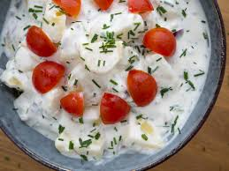

Kartoffelsalat - Danish Cold Potato Salad

Description
This recipe for Danish Cold Potato Salad, or Kold Kartoffelsalat as we called it in Denmark, is a great summer side dish and is a most-have for a traditional Nordic barbecue party. Cold Potato Salad is a fantastic side dish for most types of meat especially sausages and pork made on a grill. It is very easy to prepare and it has a great and fresh taste which is perfect for a hot summer day.
Ingredients (3-4 servings)
- 650g small potatoes with peel
- 1 cup creme fraiche/sour cream
- 1 cup soured/acidified milk (or Greek yogurt)
- 1/2 cup chives
- 1 red onion, finely chopped
- Salt to taste
Steps
- In a large pot add some water and bring it to boil; cook the potatoes with the peel for about 10-15 minutes depending on the size of them. They should be nice and tender when done. The potatoes should be covered in water during this cooking process.
- Use a knife; gently peel of the peel of the potatoes while they are still a little hot.
- Dice the potatoes in smaller bite-size pieces.
- In a bowl; add the cream fraiche/sour cream, Greek yogurt, finely chopped chives, finely chopped onions and salt. Mix all the ingredients into a nice dressing.
- Add the prepared potatoes and gently mix them with the dressing.
- Decorate the top of the bowl with chopped chives and tomatoes.
Tip: Keep it in the frindge before serve.